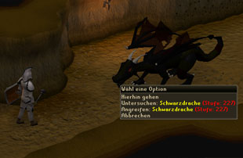
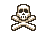

")
Grundlagen
Kampfstufe
Hier findet ihr heraus, was die Kampfstufe bedeutet und wofür sie benutzt wird.
Die Kampfstufe hängt von den Kampffertigkeiten eines Spielers oder NSCs ab. Generell gilt, dass Spieler mit höherer Kampfstufe besser kämpfen können.

Wenn ihr mit eurem Mauszeiger über einen NSC oder Spieler fahrt, wird die entsprechende Kampfstufe angezeigt.
Eine grün dargestellte Kampfstufe bedeutet, dass eure Kampfstufe höher ist und eine rote Kampfstufe zeigt an, dass der Gegner eine höhere Kampfstufe besitzt. Eine gelb dargestellte Kampfstufe besagt, dass das Ziel ungefähr genau so stark ist wie ihr.
Eure eigene Kampfstufe wird aus euren Werten berechnet. Entweder Angriff und Stärke (für Nahkampf), Magie oder Fernkampf und Verteidigung, Lebenspunkte, Gebet und Beschwörung. Beschwörung wird aber nur unter bestimmten Umständen mit einberechnet:
- Falls euer Vertrauter euch folgt, ihr einen Beschwörungs-Beutel in eurem Inventar tragt oder kürzlich einen fallen gelassen habt, wird Beschwörung in eure Kampstufe einberechnet.
- Andernfalls wird der Kampfstufenbonus durch Beschwörung als Modifikator dargestellt. Beispielsweise 50+5 falls eure Kampfstufe 50 beträgt und ihr durch Beschwörung +5 erhaltet.
Kampfgebiete
Auf RuneScape gibt es zwei Arten von Kampfgebieten: Einzelkampf- und Multikampf-Gebiete.
In Einzelkampf-Gebieten kann ein Spieler immer nur von einem Gegner gleichzeitig angegriffen werden. Umgekehrt kann ein Spieler auch nur ein Ziel angreifen.
![[Bild]](../../img/main/kbase/controls/multicombat_symbol.gif) In Multikampf-Gebieten erscheint ein Symbol zweier gekreuzter Schwerter am rechten unteren Bildrand. Alle anderen Orte sind Einzelkampf-Gebiete. Multikampf-Gebiete sind besonders in der Wildnis sehr gefährlich, da euch mehr als ein Monster gleichzeitig angreifen könnte. Das ist natürlich auch nützlich, da man andere als Team bekämpfen kann und so seltener bezwungen wird oder mächtigere Gegner leichter besiegen kann.
In Multikampf-Gebieten erscheint ein Symbol zweier gekreuzter Schwerter am rechten unteren Bildrand. Alle anderen Orte sind Einzelkampf-Gebiete. Multikampf-Gebiete sind besonders in der Wildnis sehr gefährlich, da euch mehr als ein Monster gleichzeitig angreifen könnte. Das ist natürlich auch nützlich, da man andere als Team bekämpfen kann und so seltener bezwungen wird oder mächtigere Gegner leichter besiegen kann.
Trefferpunkte

Der grüne Teil zeigt an, wie viele Lebenspunkte ihr noch übrig habt, und der rote, wie viel Lebenspunkte ihr bereits verloren habt. Wenn ihr euch einen genauen Überblick darüber verschaffen wollt, wie es um eure Trefferpunkte steht, schaut auf die entsprechende Kugel neben der Minikarte. Dort wird dargestellt, wie viele Trefferpunkte ihr zurzeit habt und wie viele ihr maximal haben könnt. (Beispiel: 180/450)
Ihr solltet eure Trefferpunkte immer im Auge behalten und dafür sorgen, dass der Balken nicht ganz rot ausgefüllt wird, da ihr sonst bezwungen wurdet. Um das zu verhindern, könnt ihr euch natürlich während eines Kampfs heilen. Dafür benötigt ihr Nahrungsmittel. Um herauszufinden, welche Nahrung am besten für euch geeignet ist, schaut bitte unter Kochen nach.
Ihr könnt natürlich auch einen taktischen Rückzug (auch Flucht genannt) versuchen, wenn ihr denkt, dass ihr kurz davor seid, bezwungen zu werden. Dafür müsst ihr nur irgendwo auf den Boden oder die Minikarte klicken. Man sollte schon eine Weile laufen, da Monster euch verfolgen und währenddessen weiter angreifen. Wenn ihr weit genug weggelaufen seid, gibt das Monster schließlich auf.
Im Kampf bezwungen werden
Falls das Glück euch nicht hold ist, oder ihr nicht genügend Nahrungsmittel mitgenommen habt, dann kann es sein, dass ihr bezwungen werdet. Wenn das passieren sollte, werdet ihr zu eurem Wiederbelebungsort teleportiert. Standardmäßig ist das Lumbridge, aber Mitglieder, die das Abenteuer 'Nachwuchsförderung' abgeschlossen haben, können auch Falador als Wiederbelebungsort festlegen. Die Einstellung lässt sich mit dem 'Blick des Saradomin' ändern, der als Belohnung für dieses Abenteuer erhalten werden kann. Wenn ihr das Abenteuer 'Der Fall der Sinclairs' abgeschlossen habt, könnt ihr euren Wiederbelebungsort auch zu Camelot ändern lassen, und nach Nomads Requiem steht euch auch die Insel des Kriegs der Seelen als Wiederbelebungsort zur Verfügung.
![[Bild]](../../img/main/kbase/misc/cool_warrior.gif) Wenn ihr unter normalen Umständen bezwungen werdet (also kein Schädelsymbol über eurem Kopf tragt), erscheint ihr an eurem Wiederbelebungsort und behaltet die drei wertvollsten Gegenstände, die ihr bei euch tragt. Wenn ihr zum Zeitpunkt eurer Niederlage das Gebet 'Gegenstandsschutz' aktiviert hattet, behaltet ihr vier Gegenstände.
Wenn ihr unter normalen Umständen bezwungen werdet (also kein Schädelsymbol über eurem Kopf tragt), erscheint ihr an eurem Wiederbelebungsort und behaltet die drei wertvollsten Gegenstände, die ihr bei euch tragt. Wenn ihr zum Zeitpunkt eurer Niederlage das Gebet 'Gegenstandsschutz' aktiviert hattet, behaltet ihr vier Gegenstände. Falls ihr euch nicht sicher seid, welche Gegenstände ihr behaltet, wenn ihr sterbt, dann klickt einfach im Fenster für 'getragene Ausrüstung' auf die Schaltfläche 'Geschützte Gegenstände'. Klickt hier, um mehr darüber zu erfahren.
Falls ihr aber geschädelt seid, behaltet ihr keinen eurer Gegenstände. Das passiert, wenn ihr auf einer Spielerkampf- oder Wildnis-Welt sterbt, oder falls ihr euch in den letzten 20 Minuten im Höllenschlund aufgehalten habt und noch geschädelt seid. Das Gebet 'Gegenstandsschutz' kann auf Spielerkampf- und Wildnis-Welten nicht benutzt werden. Die einzige Ausnahme besteht auf den 'Wildnis-Welten (+1 Gegenstand)' - dort behaltet ihr euren wertvollsten Gegenstand, wenn ihr sterbt.
|  |
Die einzige Ausnahme dabei ist das Gebet 'Gegenstandsschutz'. Wenn ihr es zum Zeitpunkt eurer Niederlage aktiviert hattet, behaltet ihr einen Gegenstand mehr als üblich (es funktioniert aber nicht auf Spielerkampf- und Wildnis-Welten).
Anmerkung: Der Wert eines Gegenstands bezieht sich nicht auf den Marktwert. Der Wert wird vielmehr durch interne Berechnungen in RuneScape festgelegt. Diesen Wert könnt ihr erfahren, indem ihr euch in einem der vielen Gemischtwarenläden auf RuneScape den 'Wert' des Gegenstands anzeigen lasst.

Weitere Artikel in Kampf
|
|
|
Weiterführende Informationen Wenn euch dieser Artikel nicht weitergeholfen hat, könnt ihr in den folgenden Kapiteln der RuneScape-Webseite mehr Informationen finden:
|
|